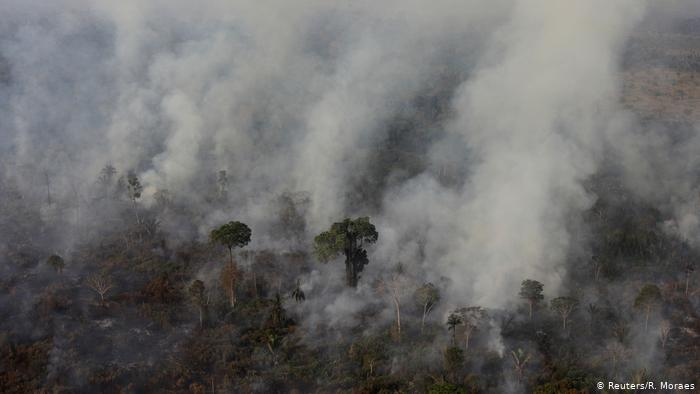

São Paulo – Os olhos do Brasil e do mundo se voltam para a maior floresta tropical e maior reserva de biodiversidade da Terra. Milhares de mensagens de alerta em diferentes línguas circulam nas redes sociais com a hashtag #PrayForAmazonia. A razão não poderia ser pior: a Amazônia arde em chamas.
O bioma é o mais afetado pela maior onda de incêndios florestais no Brasil em sete anos. Não há novidade no fenômeno em si. A Amazônia sempre sofreu com queimadas ligadas à exploração de terra. Mas como isso chegou tão longe? Veja a seguir o que já sabemos sobre os incêndios na floresta.
O fenômeno Em tempos de seca, floresta é combustível. Historicamente, durante a estação de menor incidência de chuvas, tipicamente compreendida entre os meses de julho e setembro, grande quantidade de focos de incêndios são detectados pelos satélites do Instituto Nacional de Pesquisas Espaciais (INPE).
Estudos científicos mostram que as queimadas desta região geralmente decorrem do modelo de ocupação e uso do solo, com o desmatamento de grandes áreas e consequente queima da vegetação, tanto de pastagem quanto de floresta primária para preparo da terra ao plantio. A prática é comum na agropecuária nacional, principalmente na região do Cerrado e da Amazônia Legal.
